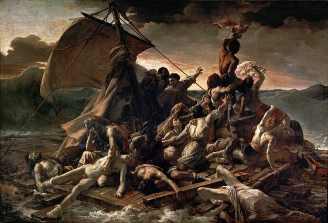
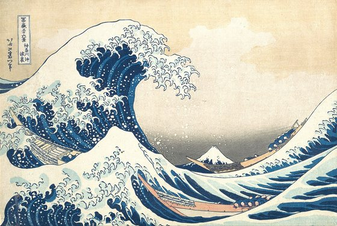
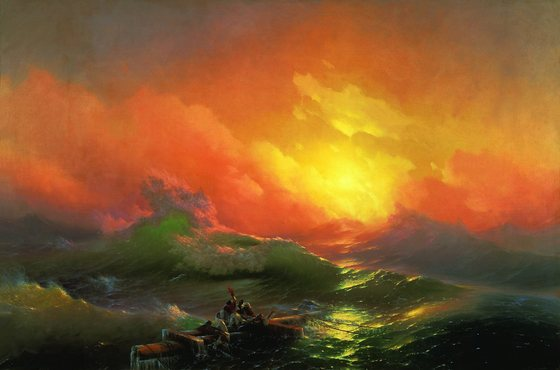

Хук → история → надежда: погружение в полотно с голосом рассказчика. 61 сек.
В учебниках эта картина — маленькая репродукция. Здесь — скан, в который можно провалиться: щипком приблизьте людей на обломке мачты, красный платок, прозрачную волну. Золотые точки — подсказки.
Полотно выше взрослого человека на полметра и больше трёх метров в ширину. В зале вы не разглядываете его — вы стоите внутри шторма.
Старое морское поверье: в шторм волны идут группами, и девятая — самая высокая, роковая. Счёт у каждого народа свой: греки боялись третьей волны, римляне — десятой, у русских моряков закрепилась девятая. Океанологи подтверждают половину: волны правда идут группами, где одна выше остальных, — но строгого номера у неё нет.
Осенью 1844 года корабль Айвазовского попал в шторм в Бискайском заливе. Судно сочли погибшим — петербургские газеты напечатали некрологи художника. Он выжил и писал море ещё 56 лет. «Девятый вал» — через шесть лет после той ночи.
Григорий XVI захотел купить его картину «Хаос» для Ватикана. Айвазовский продавать отказался — и подарил. Получил золотую медаль, а Гоголь пошутил: «Ты поднял Хаос в Ватикане».
Около 6000 полотен за жизнь. Посчитайте: это новая картина каждые три-четыре дня, шесть десятилетий без остановки. Последнюю он не дописал — умер у мольберта.
24 ордена от России, Франции, Греции, Турции. Турецкие он демонстративно выбросил в море после резни армян 1890-х — со словами, что не жалеет ни об одном.
Рассвет. Ночь, в которую ад ломал корабль, кончилась. На обломке мачты — горстка людей: они пережили шторм, но впереди поднимается девятый вал — по поверью моряков, самая страшная из волн. И всё же первое, что видит зритель на трёхметровом полотне, — не волна. Солнце.
Автор этого моря — Ованнес, сын разорившегося армянского торговца из Феодосии. Мальчиком он рисовал углём на городских заборах — и за это его не выпороли, а отдали учиться: рассказывают, что рисунки заметил сам градоначальник. Дальше были гимназия, Академия художеств в Петербурге — и к тридцати трём годам европейская слава под именем Иван Айвазовский.
Главная странность мариниста номер один: он не писал море с натуры. «Движения живых стихий неуловимы для кисти», — говорил он. Он смотрел на шторм часами, запоминал — и уходил в мастерскую, окна которой упирались в стену: чтобы работала память, а не глаза. «Девятый вал», два метра на три, написан так за одиннадцать дней. Это не легенда — документированный факт.
А главное — эту ночь он знал не понаслышке. За шесть лет до картины, в 1844-м, его корабль попал в шторм в Бискайском заливе. Судно сочли погибшим, газеты напечатали некролог. «Страх не подавил во мне способности сохранить в памяти впечатление бури, как дивной живой картины», — вспоминал художник. «Девятый вал» — это та самая ночь, увиденная изнутри и побеждённая.
Картину купил император Николай I — для галереи Эрмитажа. В 1897 году её передали в только создававшийся Русский музей, и при открытии в 1898-м она стала одним из первых его экспонатов. Там она и живёт; в 2018-м ездила в Японию и стала главным событием выставки.
Есть в этой истории и горькая нота. К концу века молодые художники и критики считали манеру Айвазовского устаревшей «эффектностью». Он умер в 1900-м за мольбертом — а через десять лет русское искусство ушло в авангард, и его моря на полвека записали в «салон». Время рассудило иначе: сегодня «Девятый вал» — одна из самых узнаваемых русских картин в мире, а выражение «девятый вал» стало в русском языке синонимом высшей точки испытания.
Художник одним абзацем. Иван Константинович Айвазовский (1817–1900). Первый живописец Главного морского штаба России — с правом ношения морского мундира. Почётный гражданин Феодосии; городу подарил картинную галерею, ныне носящую его имя. Около шести тысяч работ. Умер у мольберта, не дописав последнюю картину.
Секрет не в белилах, а в терпении. Айвазовский писал лессировками — клал друг на друга тончайшие прозрачные слои краски, каждый почти как стекло. Свет проходит сквозь них, отражается от светлого грунта и возвращается к зрителю уже изнутри полотна. Поэтому гребень волны у него не «нарисован белым», а действительно светится: краска работает как витраж. Приблизьте зумом гребень — увидите, что чистого белого там почти нет.
Картина кажется хаосом, но собрана по академической линейке. Вершина девятого вала стоит ровно в точке пересечения силовых линий холста, а солнце и обломок мачты с людьми лежат на одной диагонали — глаз идёт от гибнущих к свету и обратно, и не может остановиться. Отсюда ощущение, что волна движется: она не нарисована в движении, она так поставлена.
В 1842 году в Риме Айвазовский познакомился с Уильямом Тёрнером — главным маринистом Европы. Англичанин восхитился точностью, с которой русский художник пишет прозрачную воду. Оба шли одной дорогой: яркая палитра, свет как главный герой, стихия вместо сюжета. Разница в том, что Тёрнер растворял форму в свете, а Айвазовский свет в форму не отпускал — у него шторм остаётся узнаваемым штормом, а люди — людьми. «Девятый вал» написан в 1850-м, когда автору было тридцать три.
Картину сразу купил Николай I — для Эрмитажа. В 1897 году она стала одним из первых поступлений в только что созданный Русский музей императора Александра III, где висит и сегодня. За полтора века полотно ни разу не покидало Петербург надолго: слишком велико и слишком хрупко для дальних поездок.
Главное, что нужно понять про эту картину: на ней изображён не пик шторма. Самое страшное уже случилось — ночью, и этого на холсте нет. Разверните хронологию, и станет видно, почему солнце здесь важнее волны.
Шторм ломает корабль. Всё, что было до рассвета, Айвазовский оставил за кадром — самое эффектное он писать не стал.
От судна остался кусок мачты. За него держатся люди — шестеро. Они уже пережили то, что убило корабль.
Солнце пробило тучи. Это и есть кадр, который выбрал художник: не гибель, а первую минуту после неё.
Волна, поднимающаяся справа, ещё впереди. По морскому поверью девятая — самая страшная в череде.
Спасутся ли они, картина не отвечает. Но свет уже на их стороне — и в этом весь ответ Айвазовского.
Хронология — реконструкция по самому полотну и морскому поверью о девятом вале, а не документ.
Кораблекрушение писали все — это главный сюжет романтизма о человеке против стихии. Поставьте три знаменитых полотна рядом, и разница станет очевидной: у каждого художника море делает с человеком что-то своё.



Был и четвёртый — англичанин Уильям Тёрнер, с которым Айвазовский познакомился в Риме в 1842-м и который восхитился его прозрачной водой. Тёрнер шёл дальше всех: у него шторм растворял и корабль, и человека в чистом свете. Айвазовский на это не пошёл — у него люди остаются людьми, и им можно сопереживать.
Айвазовский спрятал на полотне то, что видно только внимательным. Три детали, 60 секунд, искать — тапом прямо по картине наверху.
Подсказка: на два первых вопроса невозможно ответить, не разглядев картину. Зум наверху — в помощь.
Красный — цвет, который видно дальше всего. Приблизьте группу на мачте: платок вскинут, как крик о помощи кораблю, которого мы не видим.
Подпись — на бревне, за которое держатся люди: приблизьте левый край обломка. Художник буквально вписал себя в их спасение.
Миф — с подвохом. Григорий XVI хотел купить «Хаос», но художник продавать отказался… и подарил. Гоголь пошутил: «Ты поднял Хаос в Ватикане».
1844 год, шторм в Бискайском заливе: корабль сочли погибшим, газеты напечатали некролог. Художник прожил до 1900-го — и написал ещё тысячи картин.
Итог дня: 0 из 60 (игра — 30, вопросы — 30).
У каждого дня года свой повод — день рождения художника, дата картины, событие. Листайте стрелками.
Музей делает крошечная команда — и делает бесплатным для всех. Если «Девятый вал» отсюда виден лучше, чем из учебника, — поддержите проект.
❤ Как поддержать